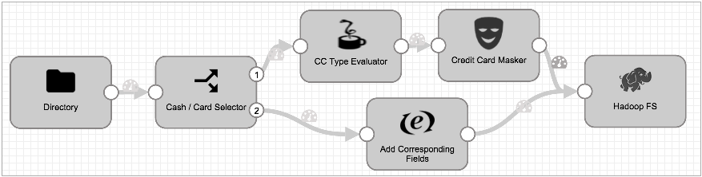
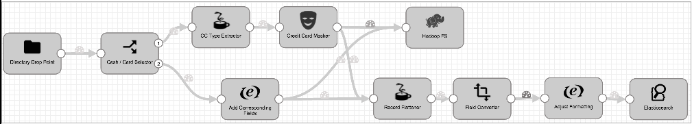

This tutorial walks through creating and running a pipeline. You can download sample data so you can perform data preview, run the completed pipeline, and monitor the results.
We have a basic and extended version of the tutorial. The basic version allows you to read from and write to a local file system so you can easily use the sample data.
The extended version manipulates the data before writing to the Trash destination. Trash is a development destination that we use to test a pipeline without writing to a destination system. If you prefer, you can write to any destination that works for you.
For sample data, the tutorial uses publicly available fare payment information from a taxi company that we've tweaked to add fake credit card data and invalid information to produce some error records for the tutorial.
The basic pipeline assesses the credit card vendors that customers use. (In the real world, you could use this information later to end contracts with low volume vendors.) The pipeline then masks the credit card numbers before writing the results to file. A secondary branch standardizes the record format for non-credit card data.
Here's the pipeline the basic tutorial creates:

The extended pipeline adds an additional branch to convert some field types and write to the Trash destination. We'll use data preview to test stage configuration and changes in data before we complete the extended pipeline:
